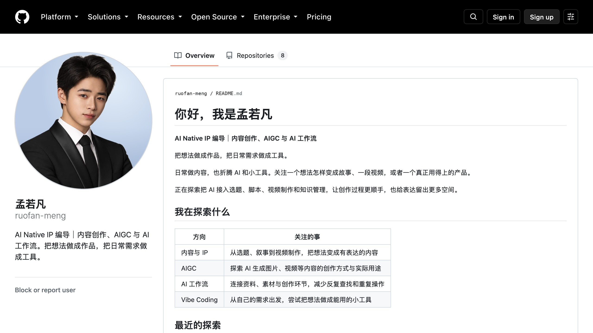
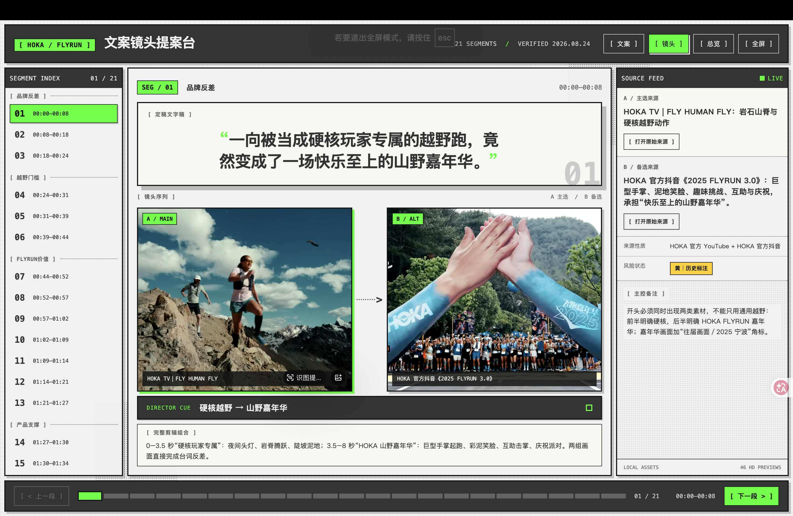
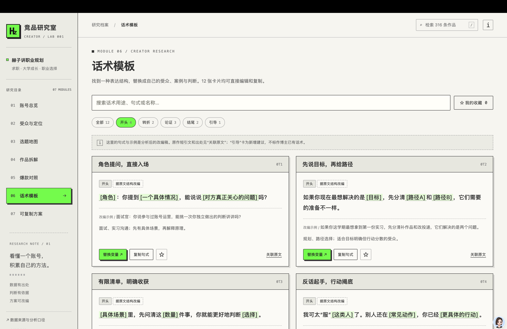
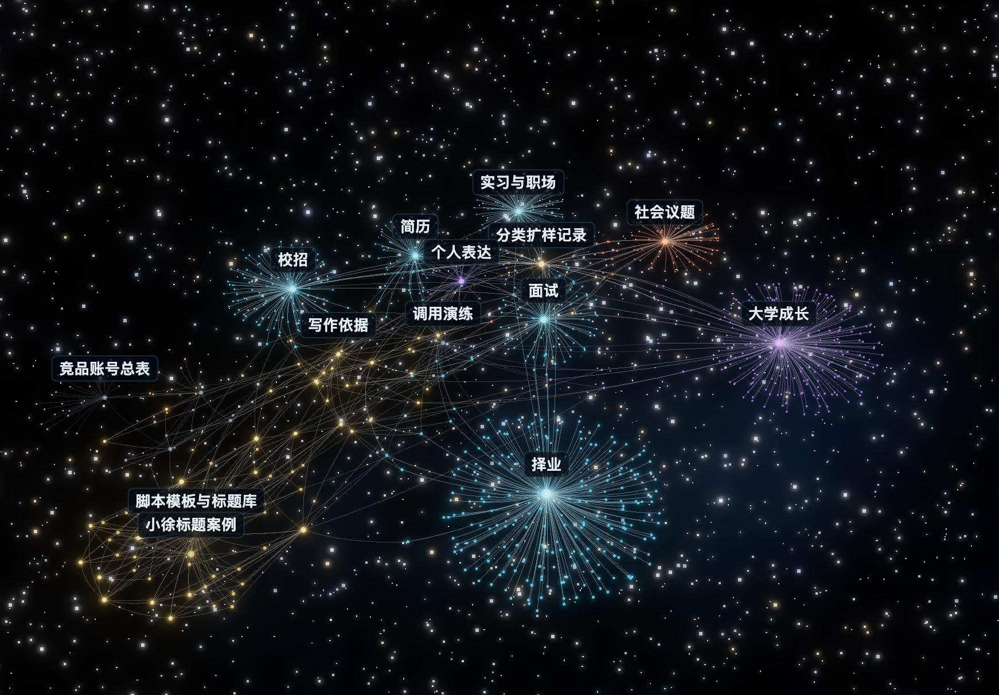
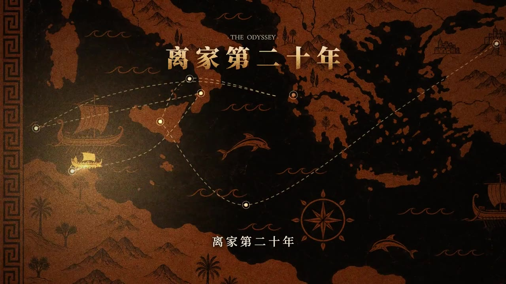
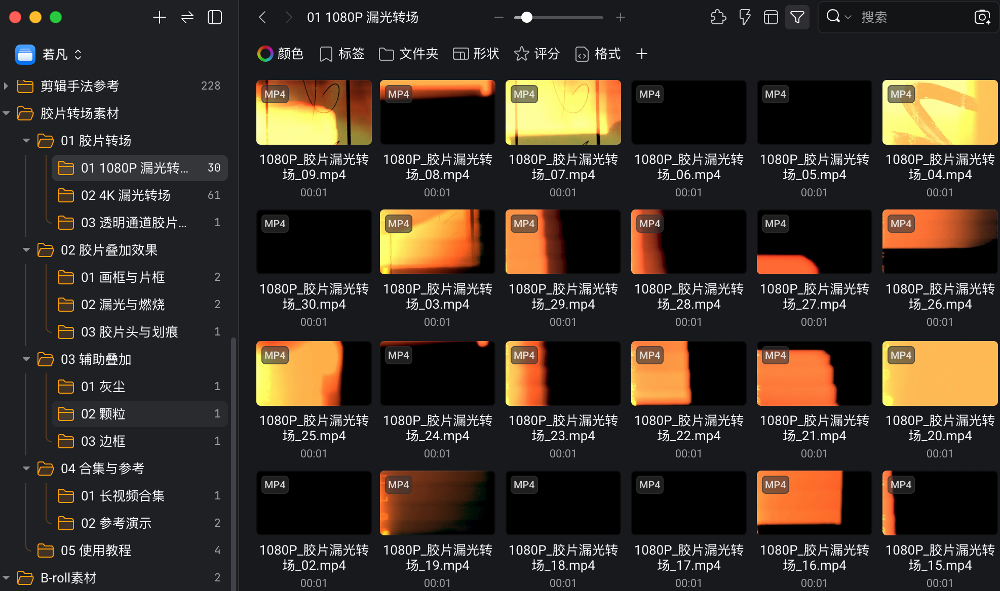
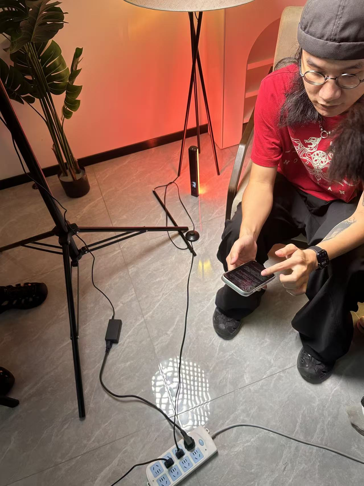

RFM / SELECTED WORK 01
冤种小徐
IP 内容策划与 AI 工作流搭建
- 选题策划
- 脚本创作
- 拍摄与剪辑
- 业务辅助
AI × IPStrategy & Content
用内容塑造 IP，用 AI 优化创作与业务流程。
 ChatGPT
ChatGPT 即梦
即梦 Cursor
Cursor Nano Banana
Nano Banana 剪映
剪映 Lovart
Lovart Claude
Claude Gemini
Gemini Seed Audio
Seed Audio MiniMaxImage2
MiniMaxImage22025.06—2026.08导演/编导杭州徐立科技
任职期发布 626 条作品，其中 489 条万赞。月产能提升来自流程优化与 AI 辅助生产。
18–23 岁是占比最高的核心年龄段。
省份粉丝占比
01 / MY AI CONTENT WORKFLOW
AI 辅助内容整理、生成与开发；选题判断、事实核对和最终交付由我负责，并与 IP 确认。
用 Claude Code 开发采集插件，筛选选题并确定内容切口
2小时 → 20分钟单轮竞品研究与选题
搭建知识库、核对事实与改稿，交由 IP 本人确认
工具选型、音色调试与成片审核
结合脚本分析原因，调整后续选题与写法
设计功能与流程，核对入库信息
−80%咨询人工整理耗时（约）
02 / HOW I WORK
从重复的内容工作里找需求：研究资料如何整理、提案如何看懂，再拆成需要的功能与流程。
用 Claude Code / Codex 开发页面与工具，由我负责功能设计和开发迭代。
把稳定做法整理为 Skill 与模板，保留人工判断和修改的环节，并沉淀项目与使用说明。

从重复的内容工作里找需求，用 Claude Code / Codex 做成可用的页面与工具；再把稳定做法沉淀为 Skill 与模板。

文案镜头提案台自研工具03 / SKILLS

开发 Chrome 采集插件与业务工具（Claude Code、Codex），连接飞书，搭建自动化工作流。

用 Obsidian 管理脚本与资料，封装选题、文案与账号风格 Skill，沉淀可复用的内容 SOP。

用 Remotion、HyperFrames，通过代码制作动效与视频镜头，将镜头整理为可复用模板。
用即梦、LibTV 制作视觉素材，结合声音克隆与数字人口播，辅助画面补充与音视频制作。

统一管理代码镜头、剪辑素材、音效、字体及图像提示词，在个人工作台中检索与调用。

镜头设计、构图、布光与运镜，相机、Pocket 及手机拍摄，剪映、After Effects 剪辑与制作。
04 / CREATIVE WORKBENCH
素材分散，查找与切换耗时。我把检索、预览集中到同一入口，保留各资源库，按创作需要调用。
拆解结果保留对应原文，方便我回看依据、判断可用写法，再修改、复制或导出。
分散存储、统一索引、集中调用，原始素材保留在各自资源库。
正在寻找长沙的 IP 编导、AI 内容编导机会，随时到岗。
选题、文案、拍摄、剪辑、复盘，以及 AI 工作流搭建。